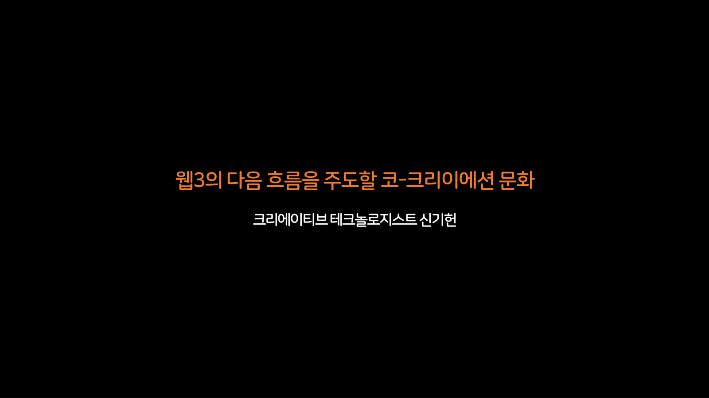
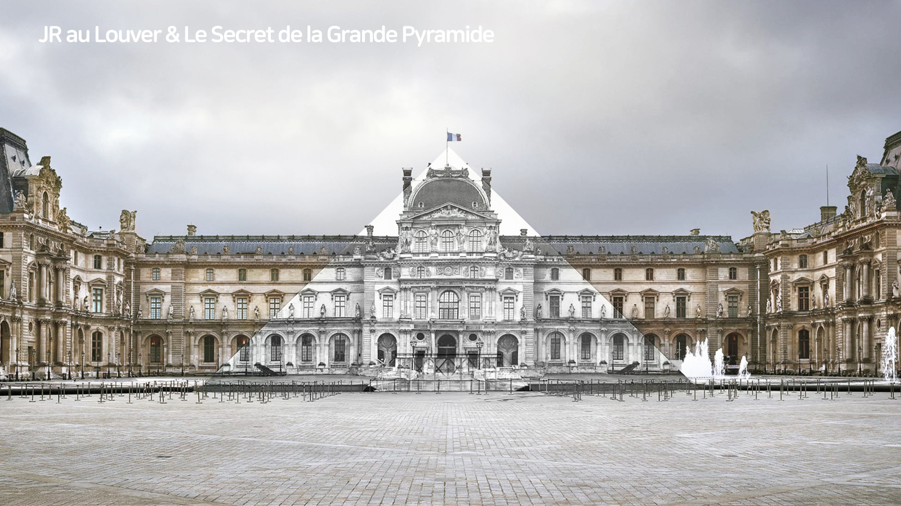
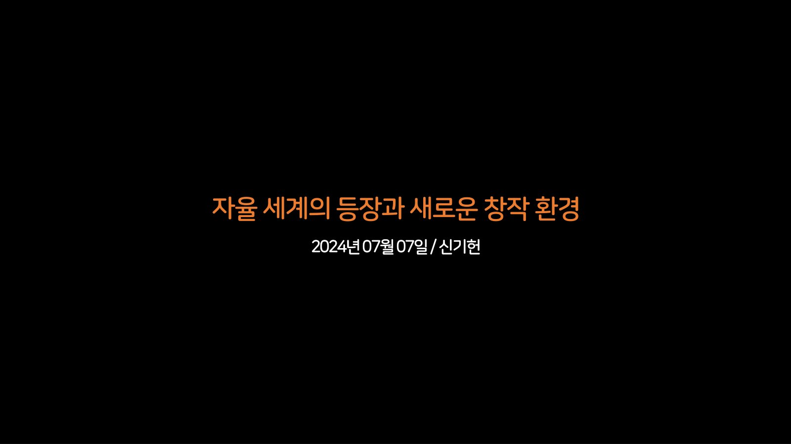

SOURCE · 연표
2017 – 2024
발표 20건
발표 연표 · 2017–2024
이 연표에 놓인 스무 건의 발표는 한 갈래가 아니다. 지속가능한 디자인과 사회적 임팩트를 말한 자리가 있고, 가상 세계의 인식과 연출을 다룬 자리가 있고, 토큰과 지갑의 작동 방식을 설명한 자리가 있고, 스스로 판단하는 존재를 다룬 자리가 있다. 분야는 여러 번 바뀌었고 그중 일부는 서로 멀다. 그럼에도 표면의 변화와 무관하게 몇 가닥은 반복해서 나타난다. 가상과 현실이 맞닿는 경계면, 창의성과 서로 다른 영역의 융합, 지속 가능한 창작이 그것이다.
각 항목에는 그 발표에 나타난 실을 표시한다. 경계면, 융합, 지속 세 가닥이며 한 항목에 셋이 모두 붙기도 하고 하나만 붙기도 한다. 실은 전 구간에 고루 흐르지 않으므로, 해당하는 가닥이 없는 항목에는 표시도 없다.
이 시리즈의 본문은 2023년 두 발표다.
나머지는 그 앞뒤로 놓인 다른 자리들이고, 하나의 이야기로 이어 읽으라고 모은 것이 아니다.
표시가 붙은 항목은 눌러서 그 발표의 자료로 넘어갈 수 있다.
발표가 열린 자리의 이름은 적지 않았다. 시점과 제목만 놓는다.
표지 장표가 남아 있지 않은 자료는 제목만 얹은 카드로 대신했다.
2017.11 – 2019.09
빛과 그림자, 임팩트와 문화예술
세 건이 놓인다. 정오의 햇빛과 그림자로 코드가 떠오르도록 짠 구조물, 조명의 빛에 정보를 실어 매장 안을 안내한 장치가 시나리오부터 산출까지 순서대로 제시된다. 이어 2019년의 두 자리는 디자인이 사회에 어떤 임팩트를 남기는가, 문화예술을 감상하고 소유하는 방식이 어떻게 바뀌는가를 다룬다. 재료의 순환과 접근성, 작품의 분할 소유가 같은 층위에서 다뤄지고 블록체인은 여러 사례 가운데 하나로만 지나간다.
2017.11.09
현실 공간의 인터랙티브 캠페인
연표의 출발점은 화면이 아니라 물리 공간에서 벌어진 두 건의 캠페인이다. 2012년 Sunny Sale Campaign의 Shadow QR Code는 낮 12시가 되면 햇빛과 그림자만으로 QR 코드가 나타나도록 구조물을 설계한 작업이고, 2013년 Sale Navigation의 Lighting Coupon은 VLC, 즉 가시광 통신으로 매장 안 사람에게 실내 내비게이션과 정보를 건넨 작업이다. 두 건 모두 시나리오, 프로토타이핑, 구조 설계, 최종 산출의 공정을 순서대로 보여준다.
낮 12시가 되면 햇빛과 그림자에 의해 QR 코드가 생성
연표의 첫 항목이라 견줄 앞선 발표가 없다. 다만 여기에는 가상 세계도 블록체인도 없고, 햇빛과 조명이라는 물리 조건을 다루는 일만 있다. 이후 7년의 이동은 이 지점에서 출발한다.
경계면
햇빛과 조명으로 물리 공간에 디지털 정보를 얹는 작업만 있다. 협업이나 창작자 보상을 다룬 대목은 없다.
현실 공간 캠페인그림자 QR 코드가시광 통신 VLC실내 내비게이션프로토타이핑
2019.08.08
디자이너가 알아야할 미래, 임팩트와 비즈니스의 연결
디자이너의 관심 키워드가 디자인에서 임팩트까지 누적되는 흐름을 배경으로, 혁신·연결·순환·증강·임팩트 다섯 갈래의 사례를 훑는다. 스타벅스 디지털 플라이휠과 애플 카드, 스페이스X 스타링크와 아마존 카이퍼, 아디다스와 팔리의 해양 플라스틱, 구글 듀플렉스와 스타디아를 지난다. 도착점은 주소 없는 사람들에게 세 단어 주소를 주는 what3words와 엑스박스 어댑티브 컨트롤러, 그리고 미국과 멕시코 국경에 걸쳐 놓인 분홍색 시소다.
한쪽만을 바라보는 디자인, 양쪽 모두를 바라보는 디자인
연표의 출발점이다. 이 시점의 관심은 가상 세계가 아니라 현실의 문제였다. 기술 트렌드를 두루 훑되 결론은 도구가 아니라 방향으로 간다. 디자인이 누구를 바라보는가라는 질문이 먼저 놓인 자리다.
지속
재료의 순환과 지속가능한 디자인이 다섯 갈래 중 한 축으로 놓인다. 가상 접점도 창작 주체의 결합도 여기엔 없다.
임팩트와 비즈니스혁신·연결·순환·증강지속가능한 디자인what3words국경 위의 디자인디자이너의 질문
2019.09.26
문화예술 비즈니스와 임팩트의 확산
문화예술 영역에서 감상과 소유의 방식이 어떻게 바뀌는지를 사례로 짚었다. 백남준 다다익선의 보존 논의, MoMA의 비디오게임 컬렉션, 베를린 필하모닉의 디지털 콘서트홀, 반 고흐의 그림을 공간으로 재현한 숙박 상품, 고가 작품의 분할 소유를 거쳐 케빈 아보쉬가 블록체인 위에 토큰으로 발행한 사진 작품에 닿는다. 포트나이트 안의 콘서트와 마인크래프트 어스를 창작의 샌드박스로 읽고, 후반부는 플랫폼에서 프로토콜로, 인센티브에서 임팩트로라는 두 축을 제시했다.
감상에서 소유로, 다시 소유에서 감상으로
직전 발표가 디자이너에게 필요한 역량과 관점을 묻는 자리였다면, 여기서는 대상이 문화예술로 좁혀지고 질문도 바뀐다. 무엇을 만들 것인가에서 사람들이 작품을 어떻게 감상하고 소유하는가로 관심이 옮겨간다. 블록체인이 사례로 처음 등장하는 자리다.
경계면융합
작품이 토큰으로 발행되고 게임 안에서 공연이 열리는 사례가 놓이며, 가상세계를 창작 샌드박스로 읽는 대목이 붙는다.
감상에서 소유로토큰으로 발행된 작품가상세계 샌드박스플랫폼에서 프로토콜로인센티브에서 임팩트로문화예술 경험 변화
2020.11 – 2021.04
메타버스라는 말이 퍼지던 시기
네 건에서 관심은 메타버스에 몰려 있다. 현실과 가상 가운데 어느 쪽이 진짜인가를 묻는 대신 그 구분이 보는 사람의 위치에 따라 달라진다고 정리하고, 광장을 덮은 설치와 영화 세트를 나란히 놓아 연출의 문제로 옮긴다. 이어 지구를 57조 개 격자로 나눈 주소 체계, 한정된 수의 가상 토지, 매달 경제 리포트를 내는 게임이 등장하며 논의가 인식에서 규모와 가격으로 내려간다.
2020.11.26
메타버스의 세계관, 현실과 가상의 경계에서 살아가기
2020년, 메타버스라는 말이 대중에게 막 알려지던 시점의 발표다. 「모여봐요 동물의 숲」에서 석 달간 600시간을 보낸 경험을 들어, 같은 가상세계가 누구에게는 세상을 배우는 공간이고 누구에게는 수익과 표현의 업무 공간이 된다고 짚는다. 닌텐도 Mii의 아바타 계보와 공룡·지하철 두 주제의 경험지도를 그려 현실과 가상 사이의 이음매를 드러낸 뒤, 매직서클·공간컴퓨팅·버츄얼빙·통합적 세계관 네 축으로 그 이음매를 지우는 길을 제시한다. 포켓몬고, 제페토, 릴 미켈라, K/DA가 사례로 놓인다.
현실과 가상에 대한 인식은 세상과 자신의 관계로부터 출발하는 상대적 개념
직전 발표가 문화예술 사업의 임팩트와 확장 구조를 묻는 자리였다면, 여기서는 척도가 개인의 인식으로 옮겨간다. 사회적 가치 대신 한 사람이 현실과 가상을 오가며 쌓는 경험의 연속성이 문제로 놓인다.
경계면
현실과 가상 중 무엇이 진짜인가를 인식의 문제로 놓고 그 이음매를 네 축으로 짚는다. 창작 보상이나 협업 구조는 다루지 않는다.
메타버스 경험지도매직서클공간컴퓨팅버츄얼빙통합적 세계관아바타 계보
2020.11.26
현실과 가상, 그 경계면의 스토리텔링
인식의 문제를 연출의 문제로 옮긴다. 루브르 피라미드를 덮은 JR의 설치, 에르메스와 요시오카 도쿠진의 쇼윈도처럼 카메라 없이 겪는 가상을 한쪽에, 스파이크 존즈의 애플 홈팟 광고와 인터스텔라의 테서랙트 세트, 트루먼 쇼처럼 세트와 편집으로 지어진 가상을 다른 쪽에 세운다. 둘이 뒤섞여 구분이 무의미해지는 지점을 낯선 무경계의 단계로 부르고, 소프 파크의 고스트 트레인, 웨이브의 가상 콘서트, 라이온 킹의 가상 프로덕션, 릴 미켈라를 사례로 놓는다. 몰입을 기술적 요소와 비기술적 요소로 갈라 본다.
무대와 관객, 그리고 예술은 무엇으로 정의되는가
직전에는 동물의 숲과 공룡, 지하철 같은 사적 경험 지도에서 출발해 메타버스를 개인의 인식 문제로 풀었다. 여기서는 출발점이 미술 설치와 영화 세트로 바뀐다. 무엇을 경험하는가에서 그 경험을 누가 어떻게 연출하는가로 관심이 옮겨간다.
경계면
현실과 가상 중 무엇이 진짜인가를 인식의 문제로 놓고 그 이음매를 네 축으로 짚는다. 창작 보상이나 협업 구조는 다루지 않는다.
낯선 무경계의 단계인식의 상대성가상 프로덕션확장현실 무대 연출버추얼 빙비기술적 몰입 요소
2021.03.27
우리가 경험해온 메타버스, 앞으로 만나게 될 메타버스
2021년 3월, 메타버스를 인식의 문제에서 규모와 경제의 문제로 옮겨 놓은 자리다. 케빈 켈리의 미러월드와 지구를 57조 개 격자로 나눠 40억 명에게 주소를 준 what3words로 시작해, 디센트럴랜드의 LAND 9만 개, 로블록스의 월 활성 이용자 1억 6400만 명, 이브 온라인이 매달 내는 경제 리포트를 잇는다. 스토리리빙 개념과 메타버스의 여덟 가지 조건을 지나, 1억 명이 한 공간에 모이는 문제와 오픈 메타버스의 거버넌스 복잡도로 닫는다.
메타버스 안에서 생겨난 가치가 현실 세계로 환원될 때 더 넓은 다양성과 가능성을 가진 세상으로 발전해나갈 것
직전에는 영화와 설치 작품을 놓고 현실과 가상의 경계를 어떻게 인식하는가를 물었다. 여기서는 그 가상이 얼마나 크고 그 안의 활동이 현실 경제로 어떻게 환원되는지를 수치로 따진다. 블록체인과 NFT가 축으로 들어온다.
경계면
미러월드와 격자 주소로 현실을 가상에 겹치고 가치의 현실 환원을 묻는다. 축이 규모와 경제라 창작 지속 조건까지는 가지 않는다.
미러월드what3words가상 부동산스토리리빙오픈 메타버스가상경제
2021.04.20
가상 경제와 사회, 메타버스로의 진화
가상의 자산이 시장과 가격을 갖게 되는 과정을 여덟 갈래로 훑었다. 걷기로 가상 스니커즈를 모으는 Aglet, 실물 양말과 교환되는 Unisocks, 대기번호를 받아 몇 시간 기다려 디지털 카드를 사는 NBA 톱샷, 7분 만에 621개가 팔린 RTFKT 협업을 앞에 놓았다. 이어 LAND 9만 개로 한정된 디센트럴랜드, 가상 토지 투자 상품, 크립토펑크와 ENS로 이어지는 사용성 확장을 다뤘고, 끝에는 NFT를 하이퍼미디어와 구분되는 크립토미디어로 정의하며 직접 발행하고 거래하는 시연을 붙였다.
아직도 운동화를 신기 위해 사는 사람이 있습니까?
직전 발표가 현실과 가상의 경계를 어떻게 인식하고 어떻게 연출하는가에 머물렀다면, 여기서 질문은 소유와 가격으로 옮겨간다. 감각의 문제였던 가상이 거래되는 자산이 되고 블록체인과 NFT가 그 근거로 들어온다.
경계면
걷기로 얻는 가상 스니커즈와 실물과 교환되는 토큰처럼 현실 행위가 가상 자산에 걸리는 사례가 중심이다.
가상 경제NFT 수집품디지털 패션가상 부동산크립토미디어가상 인플루언서
2021.06 – 2021.12
가상 공간의 노동과 수익, 그리고 규칙
다섯 건이 가상 공간 안의 노동과 수익, 그 규칙을 다룬다. 테마파크의 경험을 앱과 웨어러블로 집까지 잇는 사례와 발표자가 직접 만들어 판 섬이 나란히 놓이고, 창작자가 플랫폼에서 얻는 수익과 놀이가 소득이 된 지역의 사례가 이어진다. 관계와 소통을 먼저 놓은 자리도 있고, 끝에는 발행량과 수수료를 참여자 투표로 정하는 한 가상 공간의 운영 방식이 단독으로 다뤄진다.
2021.06.18
오늘도 나는 메타버스로 출근합니다
디즈니 테마파크 한 사례를 끝까지 파고든다. 휴장으로 매출이 85% 급감하고 40년 만에 첫 연간 적자를 낸 뒤 물리 공간과 디지털 공간을 잇겠다는 선언이 나온 경위를 짚고, 집과 파크와 호텔을 연결한 매직 모바일, 신데렐라 캐슬 위의 스냅챗 증강현실, 오큘러스 3부작과 이어지는 스타워즈 어트랙션을 사례로 든다. 이야기를 보는 데서 그 안에서 자기 몫을 만드는 스토리리빙으로 넘어간다는 정리가 뒤따른다. 후반부는 「모여봐요 동물의 숲」에서 1800시간을 들여 만든 섬을 판 발표자 자신의 작업이다.
가상적으로 강화된 물리세계, 물리적으로 지속되는 가상세계가 통합된 마법세계
4월 발표가 가상 경제 전반을 여덟 갈래로 훑는 조망이었다면, 6월은 사례 하나와 발표자 자신의 일로 좁힌다. 무엇이 일어나고 있는가에서 그 안에서 어떻게 일하고 무엇을 버는가로 질문이 옮겨간다.
경계면지속
물리 공간과 디지털 공간을 잇는 사례가 앞에 놓이고, 뒤에는 1800시간을 들인 창작에 대한 보상이 놓인다.
디즈니 테마파크스토리리빙가상세계 노동동물의 숲 섬 제작크리에이터 수익전환비용
2021.07.21
Play to Earn in Metaverse
게임을 즐기며 수익을 얻는다는 말이 왜 더 이상 모순이 아닌지를 사례로 쌓아 올린 발표다. 로블록스의 창작자 생태계와 빌더맨, 475 로벅스에 한정 판매된 구찌 가방이 35만 로벅스까지 오른 거래, 제페토의 개인 창작자 수익, 크립토펑크 이미지를 읽어 스니커즈를 만든 RTFKT, 소더비가 디센트럴랜드에 연 갤러리, 엑시 인피니티를 중심으로 필리핀에 번진 놀이 기반 소득이 차례로 놓인다. 발표자가 초기부터 보유한 랜드와 그 주간 자산 리포트도 근거로 쓰인다.
커스터머에서 크리에이터로, 크리에이터에서 플레이어로
직전 발표는 발표자 한 사람이 가상 세계에서 일해 얻은 수익을 다뤘다. 여기서는 시선이 개인의 노동에서 다수의 경제로 옮겨간다. 소유를 증명하는 NFT와 그 위에 쌓인 커뮤니티가 처음 논지의 중심에 놓인다.
경계면융합지속
창작자 생태계와 수익 분배가 전면에 놓이고, 가상에서 번 것이 현실 소득이 된 지역 사례가 함께 제시된다.
플레이 투 언로블록스 창작자 생태계가상 자산 소유NFT 커뮤니티D2A 시장엑시 인피니티
2021.09.02
메타버스가 불러온 충격, 새로운 관계와 소통의 방식
몰입형 VR 소셜 플랫폼에서 출발해 텔레프레즌스가 소셜 프레즌스로 옮겨가는 국면을 짚는다. 공급자가 의도한 행동 방식과 참여자가 실제로 하는 행동의 어긋남을 반복 축으로 삼아, 창작 도구의 개방과 게임 안에서 벌어진 공연을 같은 틀로 읽는다. 미디어로서의 메타버스를 다섯 속성으로 정리한 뒤, 후반은 발표자 자신의 정식화로 넘어간다. 크립토미디어를 하이퍼미디어에 창작자와 소유자와 시장을 더한 것으로 등식화하고, 열 개의 명제로 복제와 확산이 원본의 가치를 깎는 것이 아니라 높인다는 역설을 논증한다. 모나리자의 복제품이 원본을 손상하지 않듯, 원본으로 식별되게만 하면 접근과 사용을 제약하지 않고도 가치가 선다는 것이다.
단순 교환 가치, 사용 가치를 넘어서 입체적인 활용 가능성을 발견
플레이해서 번다는 구조에서 물러나 관계와 소통을 먼저 놓는다. 가치가 플랫폼 안에 머무르던 자리에 NFT를 넣어, 만들어진 것이 바깥으로 나갈 수 있는지를 묻는 쪽으로 축이 옮겨간다.
경계면융합
창작 도구의 개방과 공급자 의도를 벗어나는 참여자 행동이 사례로 놓이고, 가치가 플랫폼 밖으로 나가는 통로를 묻는다.
소셜 프레즌스크리에이터 저작도구참여자 행동NFT 가치 연동크립토미디어오픈 메타버스크립토미디어 정식화복제와 확산의 역설
2021.10.27
메타버스로부터 시작되는 새로운 변화
메타버스를 기술 예측과 SF적 상상이라는 두 관점의 스펙트럼으로 놓고, 세계관·현실 재현·정체성·가상 경제·크리에이터 생태계·프로토콜의 여섯 갈래로 다뤘다. 리그 오브 레전드의 K/DA와 아케인, 지구를 3미터 격자로 나눈 what3words, 노 맨즈 스카이, 릴 미켈라를 지나 디센트럴랜드의 LAND 9만 개, NBA 톱샷, 로블록스의 구찌 가든, 크립토펑크로 이어진다. 마지막은 잭 도시의 첫 트윗 NFT와 유니삭스, 소셜 토큰, DAO, 엑시 인피니티다.
현실 세계와 가상 세계의 가치 연동을 위한 새로운 프로토콜인 동시에 프로세스
직전은 게임 안에서 브랜드 캠페인을 만들며 겪은 개인의 노동과 수익 이야기였다. 여기서는 그 1인칭이 빠지고 시야가 가상 경제의 구조 전체로 넓어진다. NFT와 토큰, DAO 같은 블록체인 프로토콜이 처음으로 발표의 마지막 갈래를 차지한다.
경계면융합지속
현실 재현과 크리에이터 생태계, 가상 경제와 토큰 거버넌스가 여섯 갈래 안에 나란히 들어와 세 가닥이 모두 잡힌다.
메타버스 두 관점현실의 재현디지털 정체성가상 경제와 LAND크리에이터 생태계NFT 프로토콜
2021.12.22
디센트럴랜드의 시작과 현재, 그리고 미래
이더리움 위에 한 변 16미터짜리 LAND 9만 개로 한정된 가상 공간 하나를 창립부터 끝까지 따라간다. 2017년의 ICO와 최초 LAND 분배, MANA 인플레이션을 8퍼센트에서 0퍼센트로 바꾼 투표와 거래 수수료 소각 구조를 짚고, 아타리가 연출한 레트로 아케이드와 나흘간 24,000명이 다녀간 메타버스 페스티벌, 보손 프로토콜의 커머스 실험을 현재로 놓는다. 마지막은 DAO와 보안자문위원회가 LAND 경매와 수수료, 개발 보조금을 표결로 정하는 거버넌스다.
아직까지 누구도 경험해보지 못한 진정한 의미의 메타버스에 대한 실험이 이어지는 중
직전 발표는 여섯 갈래로 나뉜 총론이었고 디센트럴랜드는 그 안의 한 사례였다. 두 달 뒤 발표자는 그 한 곳만 남기고 나머지를 덜어낸다. 관심이 메타버스의 정의에서 한 가상세계가 스스로를 운영하는 방식으로 옮겨간다.
융합지속
발행량과 수수료, 개발 보조금을 참여자 표결로 정하는 구조를 짚는다. 가상 공간 내부를 따라가 현실 접점은 거의 없다.
디센트럴랜드LAND와 MANADAO 거버넌스토큰 소각가상 부동산메타버스 페스티벌
2022.06 – 2023.01
현실 접점, 협업, 신원
세 건은 소유를 증명하는 기록이 현실의 사물과 장소, 신원에 어떻게 걸리는지를 본다. 인증으로 열리는 오프라인 공간, 조립한 뒤 실제로 발사되는 물건, 전송도 거래도 되지 않는 토큰이 사례로 놓인다. 게임을 다룬 자리에서는 협업을 다섯 유형으로 나누고 자산이 게임 밖에서 쓰이지 못하는 한계를 짚으며, 마지막에는 프로필 한 장이 자산이자 신원 증명으로 겹치는 구조를 다룬다.
2022.06.22
현실과 가상을 연결하는 NFT SPACE
비트코인의 기록 공간과 이더리움의 연산 공간 위에 NFT SPACE가 등장했다는 진단에서 출발해, 소유 증명이 현실(IRL)과 맞물리는 지점을 여섯 갈래로 나눈다. 나이키의 RTFKT 인수, NFT 인증으로 열리는 Doodles의 SXSW 리테일과 쇼피파이의 토큰 게이티드 커머스, 호주 오픈 경기 좌표에 득점 리워드를 건 AO Art Ball, 조립한 로켓을 실제로 발사해 홀더에게 배송하는 Tom Sachs Rocket Factory, 전송도 거래도 되지 않는 소울바운드 토큰을 사례로 짚는다.
누군가는 이러한 SPACE를 모호한 경계의 세계로 바라보지만, 다른 누군가는 이것을 현실 그 자체로 인식하며 살아가고 있음
직전에는 가상 세계 하나의 내부 경제와 거버넌스를 들여다봤다. 여기서는 시선이 바깥으로 향한다. 소유 증명이 현실의 사물, 시간, 관계, 정체성에 어떻게 걸리는지로 질문이 옮겨간다.
경계면
토큰으로 열리는 매장과 실물로 배송되는 제작물처럼 소유 증명이 현실 사물과 장소에 걸리는 사례가 대부분이다.
NFT SPACEIRL 연결토큰 게이티드 커머스피지털소울바운드 토큰새로운 정체성
2022.12.07
웹3 게임 활성화를 위한 파트너십 활용
포트나이트가 리그 오브 레전드, 나이키 에어 조던, 폴로 랄프 로렌, 축구 클럽들과 벌인 협업을 먼저 훑고, 그렇게 만들어진 자산이 게임 밖에서는 쓰이지 못한다는 한계를 짚는다. 이어 웹3 게임의 협업을 다섯 유형으로 나눈다. 구현을 돕는 램퍼와 플레이댑, 게임 안 사용성을 키운 제드런과 버드와이저, 게임 밖으로 잇는 휴먼파크와 체인링크, 널리 알리는 레이어3와 퀘스트3, 카브 DAO와 아보카도 DAO, 미러와 노티파이까지 실제 서비스를 유형별로 배치한다.
프로젝트 팀이 가진 강점을 시작점으로 삼고, 나머지 부족한 영역을 협업을 통해 보완
직전에는 NFT가 현실 세계의 사건과 정체성에 어떻게 닿는가를 물었다. 여기서는 그 질문을 게임 하나를 실제로 굴리는 문제로 옮긴다. 관심이 개념의 확장에서, 무엇을 누구와 나눠 맡을 것인가라는 배치의 문제로 내려온다.
융합지속
협업을 다섯 유형으로 나눈 배치 자체가 축이고, 그중 크리에이터 지원이 한 갈래로 자리를 차지한다.
웹3 게임 협업협업 유형 5분류게임 밖 사용성온체인 퀘스트와 평판크리에이터 지원DAO 거버넌스
2023.01.18
오픈 메타버스를 위한 웹3 기반 아이덴티티
아바타를 현실 아이덴티티의 확장으로 놓고 출발한다. 메모지와 비트모지, 링크트리를 지나 가상 신원의 위조·도용 문제를 웹3가 어떻게 보완하는지 짚는다. Genies, 소울바운드 토큰, Tokenproof의 토큰 게이팅을 거쳐 PFP NFT의 작동 원리로 들어간다. Azuki의 Collector's Profile, 칩을 심은 PBT, 40번 캐릭터를 5만 개로 쪼갠 Bobu, 스테이플버스 SAPIENZ의 Tokenbound Vault까지 프로필 한 장이 자산이자 신원 증명으로 겹치는 구조를 다룬다.
캐릭터 프로필 페이지 자체가 NFT가 될 수 있다면?
직전이 프로젝트의 부족한 영역을 협업 다섯 유형으로 메우는 공급자 쪽 지도였다면, 여기서는 시선이 개인에게 내려온다. 무엇을 덧붙일까 대신 한 사람의 신원이 두 세계에 걸쳐 어떻게 하나로 이어지는가를 묻는다.
경계면융합
아바타와 실물 칩이 한 사람의 신원으로 겹치고, 캐릭터 하나를 다수가 나눠 갖는 분산 IP 구조가 함께 놓인다.
아이덴티티 확장PFP NFT 작동 원리소울바운드 토큰토큰 게이팅아바타 소유권분산 IP 거버넌스
2023.06 – 2023.12
코-크리에이션이라는 주제와 그 주변
네 건 가운데 셋이 함께 만드는 일을 다룬다. 기획 단계를 사용자에게 여는 완구 사례, 참여를 일곱 단계로 펼친 프로젝트, 구성 요소마다 로열티를 나누는 발행 구조, 팬의 투표로 정해지는 곡이 쌓이고, 휘발되던 경험에 영속성을 더하는 온체인 스토리텔링이 다섯 도구로 정리된다. 나머지 한 건은 거래소와 지갑 사이에서 자산이 움직이는 경로만 따라가며, 세 가닥 어느 쪽도 붙지 않는 자리다.

2023.06.30이 시리즈의 본문
웹3의 다음 흐름을 주도할 코-크리에이션 문화
레고무비의 마스터빌더와 접착제에서 출발해, 완결된 IP 상품과 무한한 조합 사이의 긴장을 짚고 기획·디자인 단계를 사용자에게 여는 레고 아이디어스를 대안으로 든다. 이어 스니커 브랜드가 NFT를 거쳐 세계관으로 넓어지는 과정, 참여를 일곱 단계로 펼친 아바타 프로젝트, NFT 자체가 지갑이 되는 ERC-6551, 실물에 심은 NFC 태그, 구성 요소마다 로열티를 나누는 민팅 구조, 팬이 토큰으로 타이틀곡을 정하는 투표까지 사례를 순서대로 쌓아 일곱 절을 채운다.
코-크리에이션은 인간 중심으로 회귀하는 문화
직전이 아바타와 PFP가 누구를 증명하는가라는 아이덴티티의 문제였다면, 여기서는 그 소유를 출발점으로 삼아 무엇을 함께 만들고 기여를 어떻게 나눌 것인가로 질문이 옮겨간다. 개념 정리에서 사례 축적으로 서술 방식도 바뀐다.
경계면융합지속
기획을 사용자에게 여는 구조와 구성 요소별 로열티 분배가 함께 놓이고, 실물에 심은 태그가 현실 접점으로 붙는다.
코-크리에이션레고 아이디어스스테이플버스ERC-6551로열티 분배온체인 거버넌스
이 발표의 장표 96장 보기 →
2023.07.18
거래소와 지갑을 중심으로 살펴보는 암호화폐 투자자 여정 지도
암호화폐를 소유와 거래와 사용의 세 축으로 나누고, 그중 사용의 측면이 간과되어 온 지점을 파고든다. 중앙화 거래소에서는 법정화폐 입출금과 기축자산 BTC·ETH·USDT를 거친 거래가 거래소 서버에만 기록되고, 개인 지갑으로 출금할 때 비로소 블록체인에 함께 기록된다. 탈중앙화 거래소는 지갑 연동과 서명, 이더리움·솔라나·에이다·코스모스를 잇는 브릿지, 되돌릴 수 없는 체결과 거버넌스 참여로 대비된다. 거래소 지갑과 개인 지갑의 책임 소재 차이를 세 차례 데모로 시연한다.
웹3의 ‘탈중앙화’는 사용자에게 전혀 다른 지식과 능력을 요구
직전 발표는 아바타와 PFP NFT를 통한 아이덴티티의 확장을 다뤘다. 여기서는 그 의미론을 걷어내고 계정과 지갑 사이에서 자산이 실제로 어떻게 움직이는지를 따라간다. 관심이 정체성의 확장에서 사용자가 처음 만나는 관문으로 내려온다.
이어지는 실 없음
거래소와 지갑 사이에서 자산이 움직이는 경로만 다룬다. 현실 접점도 공동 창작도 창작자 보상도 나오지 않는다.
암호화폐 사용 경험중앙화 거래소탈중앙화 거래소개인 지갑자산 전송 구조투자자 여정 지도

2023.11.09이 시리즈의 본문
현실과 가상을 연결하는 블록체인 기반의 스토리텔링
루브르 광장을 사진으로 덮은 설치에서 출발해 도시를 테마파크로 다시 본다. 앱과 웨어러블이 방문 전후를 잇는 사례를 모아, 경험 여정에서 비는 자리를 메울 브리지를 그린다. 스토리텔링과 매직서클을 지나 블록체인으로 내려가, 도시마다 잡은 포켓몬을 두고 기존 플랫폼에 완전한 소유가 없다고 짚는다. 휘발되던 콘텐츠에 영속성과 불변성을 더하는 온체인화를 정의하고, 온체인 스토리텔링을 시네마틱, 토큰 바운드 어카운트, PFP, Dapp, 현실 접점 다섯 도구로 나눠 캐릭터 Keira와 Eva로 보여준다.
도시가 하나의 거대한 테마파크라면?
직전에는 거래소와 지갑을 따라 암호화폐를 사고 보관하는 경로를 설명했다. 여기서는 그 소유가 캐릭터와 소지품, 이야기의 재료가 된다. 자산을 다루는 법에서 자산으로 무엇을 말할 것인가로 물음이 옮겨간다.
경계면
도시와 테마파크, 앱과 웨어러블로 현실과 가상을 잇는다. 영속성은 다루되 보상이나 기여 정산은 등장하지 않는다.
도시와 테마파크매직서클경험의 상속온체인화온체인 스토리텔링토큰 바운드 어카운트
이 발표의 장표 71장 보기 →
2023.12.12
Web3's Next Narrative: Co-Creation
2023년 6월 발표를 영어로 옮긴 판본이다. 목차 일곱 개가 그대로 유지된다. 레고 아이디어스, 제프 스테이플의 스테이플버스와 SAPIENZ 코-크리에이션 7단계, ERC-6551 TBA, RTFKT 클론엑스 크리에이터 툴, 나이키 .SWOOSH의 #YourForce1, 디지탈랙스와 더 패브리컨트, 엔비디아 옴니버스 ACE, 모드하우스 트리플에스가 같은 순서로 이어진다. 더해진 것은 스테이플버스가 디지털 세계에 자기 세계관을 만들고 있다는 한 줄이다.
Co-creation is a human-centered culture
직전 발표가 자체 캐릭터와 도구 다섯 가지로 온체인 스토리텔링을 밀고 나갔다면, 이 판본은 다섯 달 전의 구성을 손대지 않은 채 언어만 바꾼다. 새 주장을 더하기보다 같은 주장을 국외 독자가 읽을 수 있게 옮긴 쪽이다.
융합지속
코-크리에이션 단계와 크리에이터 툴, 수익 분배와 토큰 거버넌스가 그대로 유지된다. 현실 접점은 두드러지지 않는다.
영문 판본코-크리에이션 7단계ERC-6551 TBA크리에이터 툴수익 분배토큰 거버넌스
2024.07 – 2024.07
자율 세계와 생성 도구
마지막 한 건은 창작 환경의 조건을 다룬다. 실시간 렌더링과 절차적 생성이 공간을 끝없이 만들어내고, 언어 모델을 얹은 캐릭터가 그 안에서 스스로 판단하며 지갑을 들고 활동한다. 현실을 그대로 옮긴 디지털 트윈이 그 무대로 제시된다. 생성 도구가 창작자의 정체성을 흔드는 국면에서 기술적 해답 대신 문화라는 조건이 놓이며 발표가 닫힌다.

2024.07.07다음 시리즈
자율 세계의 등장과 새로운 창작 환경
2024년 7월, 발표자는 창작의 무대를 사람 바깥까지 넓힌다. 게임 엔진의 실시간 렌더링과 절차적 생성이 공간을 끝없이 만들어내고, 언어 모델을 얹은 캐릭터가 그 안에서 스스로 판단하며 활동한다. 소유권과 지갑을 가진 이 존재들이 자율적으로 경제 활동을 이어가는 세계를 자율 세계라 부르고, 현실을 그대로 옮긴 디지털 트윈이 그 무대가 된다고 정리한다. 생성 도구가 창작자의 정체성을 흔드는 국면에서 답 대신 문화라는 조건을 제시하며 닫는다.
중요한 사실은 이렇게 디지털로 구현된 가상 세계는 AI 에이전트가 활약하기에 최적의 환경이라는 점입니다.
2023년의 두 발표에서 창작의 주체는 사람이었고, 블록체인은 그 참여에 영속성을 부여하는 층이었다. 여기서는 스스로 판단하고 자산을 가진 존재가 주체 자리에 들어선다. 축이 함께 만드는 문화에서 함께 살아가는 조건으로 옮겨간다.
경계면융합지속
디지털 트윈이 무대가 되고 엔진과 언어 모델이 겹쳐 창작 환경을 이룬다. 끝에는 창작이 이어질 조건으로 문화가 놓인다.
자율 세계AI 에이전트디지털 트윈생성 AI새로운 창작 엔진창작 문화
시리즈 03 으로 →